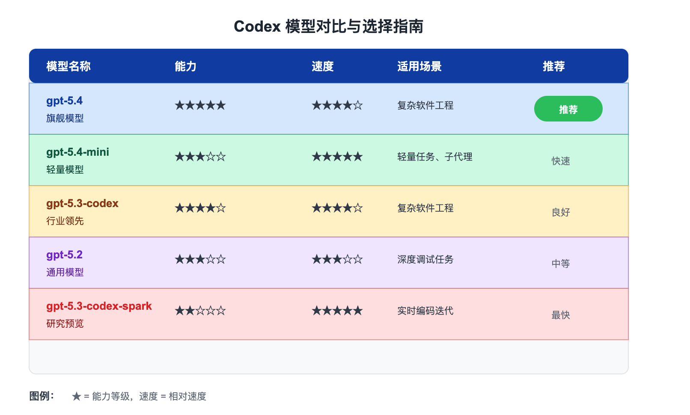

Codex CLI モデル選択
Codex は複数の AI モデルをサポートしており、モデルによって速度、能力、コストが異なります。このセクションでは、適切なモデルの選択方法について詳しく説明します。
利用可能なモデル

推奨モデル
| モデル | 特徴 | 適用シーン |
|---|---|---|
| gpt-5.4 | 最新の最上位モデル、最強のコーディング能力 | 複雑なソフトウェアエンジニアリング、専門的な作業 |
| gpt-5.4-mini | 高速で効率的な軽量モデル | 応答性の高いコーディングタスク、サブエージェント |
| gpt-5.3-codex | 業界をリードするコーディングモデル | 複雑なソフトウェアエンジニアリングタスク |
ほとんどの Codex タスクでは、gpt-5.4 から始めることをお勧めします。強力なコーディング、推論、ネイティブなコンピューター使用、およびより広範な専門ワークフローを1つのモデルに統合しています。
代替モデル
| モデル | 特徴 | 適用シーン |
|---|---|---|
| gpt-5.2 | 以前にコーディングおよびエージェントタスクに使用されていた汎用モデル | 深い思考が必要な複雑なデバッグタスク |
選択の推奨事項
日常のコーディングタスク
使用：gpt-5.4デフォルトの選択肢として。さまざまなコーディングタスクで優れた性能を発揮します。
簡単・高速タスク
使用：gpt-5.4-mini軽量なコーディングタスクやサブエージェント向けに、より高速で低コストのオプションが必要な場合。
複雑な推論タスク
深く考える必要がある難しいデバッグタスクに遭遇した場合は、gpt-5.2。
デフォルトモデルの設定
設定ファイルでデフォルトで使用するモデルを設定できます：
デフォルトモデルの設定
# デフォルトモデルを設定
model = "gpt-5.4"
モデルを指定しない場合、Codex アプリ、CLI、または IDE 拡張機能はデフォルトで推奨モデルを使用します。
一時的にモデルを変更
コマンドライン引数を使用
コマンドラインでモデルを指定
codex -m gpt-5.4
# exec コマンドを使用
codex exec -m gpt-5.4 "fix this bug"
セッション内で切り替え
セッション内でモデルを切り替え
/model gpt-5.4-mini
# または /model コマンドを使用
/model gpt-5.2
IDE 拡張機能で切り替え
IDE 拡張機能では、入力ボックスの下にあるモデルセレクターを使用してモデルを切り替えます。
推論設定
Codex は推論作業量（reasoning effort）の調整をサポートしています：
| 設定値 | 説明 |
|---|---|
minimal | 最小推論 |
low | 低推論 |
medium | 中推論（デフォルト） |
high | 高推論 |
xhigh | 最高推論（モデルによる） |
推論強度の設定
model_reasoning_effort = "medium"
# プランモードに特定の推論強度を設定
plan_mode_reasoning_effort = "high"
推論作業量が高いほど、より深く考慮された応答が生成されますが、遅くなり、より多くのリソースを消費する可能性があります。
推論サマリー
推論サマリーの詳細度を制御できます：
| 設定値 | 説明 |
|---|---|
auto | 自動選択 |
concise | 簡潔なサマリー |
detailed | 詳細なサマリー |
none | サマリー無効 |
推論サマリーの設定
model_reasoning_summary = "auto"
カスタムモデルプロバイダー
OpenAI のモデルに加えて、他のモデルプロバイダーを設定することもできます：
カスタムプロバイダーの設定
# プロバイダーの表示名
name = "My Custom Provider"
# API ベース URL
base_url = "https://api.example.com/v1"
# API キー環境変数
env_key = "CUSTOM_PROVIDER_API_KEY"
# その他の設定
http_headers = {
"X-Custom-Header": "value"
}
Chat Completions または Responses API をサポートする任意のモデルとプロバイダーをサポートします。
サービス階層
Codex は異なるサービス階層をサポートしています：
| サービス階層 | 説明 |
|---|---|
flex | 柔軟な階層、コスト最適化 |
fast | 高速階層、速度優先 |
サービス階層の設定
service_tier = "fast"
モデル選択のベストプラクティス
新規プロジェクトの開始
使用：gpt-5.4最適な全体的なエクスペリエンスを得るために。
簡単なタスク
使用：gpt-5.4-miniコスト削減。
複雑なデバッグ
gpt-5.2深いデバッグのために。
サブエージェント
サブエージェントにはgpt-5.4-mini効率向上のために使用します。
新しいモデルや改善が継続的にリリースされるため、定期的に更新を確認してください。
よくある質問
Q: 日常のコーディングに最適なモデルはどれですか？
gpt-5.4 は日常のコーディングタスクに最適な選択肢であり、強力な機能と適切な速度のバランスを提供します。
Q: サブエージェントにミニモデルを推奨するのはなぜですか？
サブエージェントは比較的単純なタスクを実行するため、ミニモデルはより高速に完了し、コストも削減できます。
Q: 独自のモデルを使用できますか？
はい、model_providers を設定することで、Responses API をサポートする任意のモデルを使用できます。
Q: モデルの選択はコストに影響しますか？
はい、モデルによって価格が異なります。料金ページで詳細を確認してください。
その他の拡張